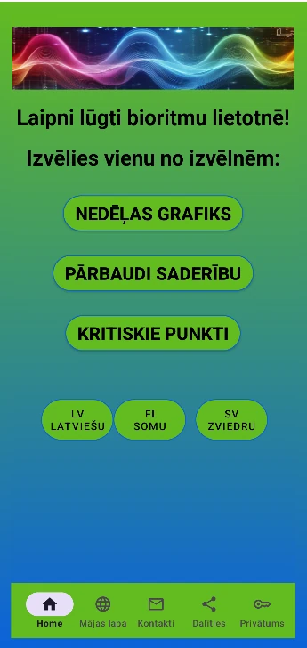

Tu esi ambiciozs. Tu veido karjeru, attiecības un meklē līdzsvaru dinamiskā pasaulē.
Bet kas notiktu, ja tev būtu piekļuve slepenai kartei, kas precīzi parāda tava ķermeņa un prāta optimālos darbības laikus?
Un kas notiktu, ja tev būtu pieejama "mīlestības formula", pēc kuras aprēķināt saderību ar otru cilvēku ?
Iepazīsties ar Bioritmu lietotni – tavu personīgo dzīves optimizācijas rīku.
Bioritmu teorija vēsta, ka cilvēka dzīvi un pašsajūtu ietekmē trīs nemainīgi cikli, kuru ilgums ir 23, 28 un 33 dienas. Šie cikli sākas dzimšanas brīdī un ritmiski atkārtojas visas dzīves garumā.
Lietotnes grafikā katrs cikls svārstās starp pozitīvām un negatīvām vērtībām:
Bezmaksas bioritmu kalkulators telefonā. Nosaki savu fizisko, emocionālo un intelektuālo ciklu. Atklāj "mīlestības formulu".
Lejupielādēt Google PlaySaziņa: manibioritmi@gmail.com
